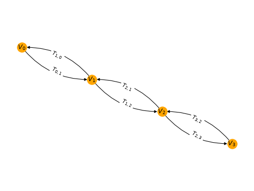
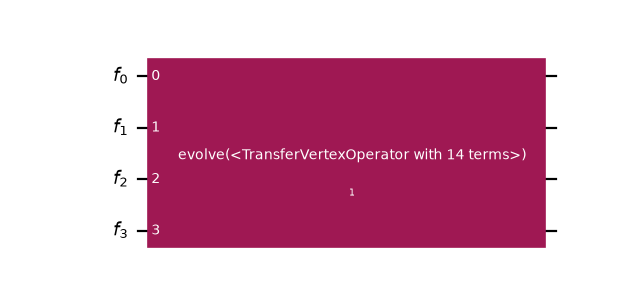
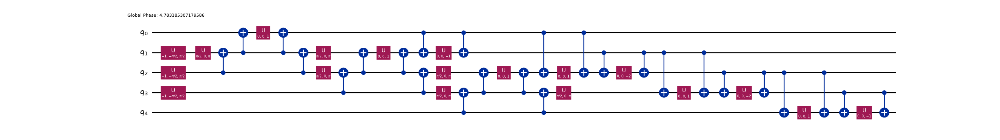
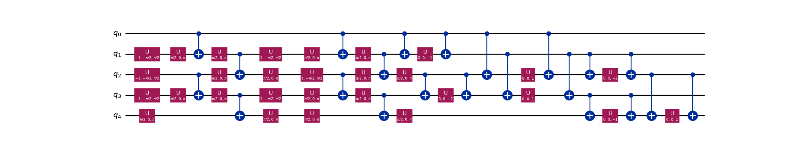

Simulate 1D Fermi-Hubbard dynamics with flow sets¶
Important
The functions described in this guide are currently available only in the Python API. Equivalent functionality will be made available in the C API in a future release.
This guide builds a circuit for the time dynamics of the one-dimensional Fermi-Hubbard
model, from writing down the Hamiltonian to checking the evolved site densities. What
makes the route interesting is a single idea, taken from the flow set framework of
Gandon et al. [1], the work that also motivated the TransferVertexOperator
in this package:
Instead of grouping Hamiltonian terms after the fermion-to-qubit mapping, group them before it, into flow sets, one-dimensional subsets of the directed fermionic interaction graph whose transfer operators mutually commute.
That choice drives everything below. It calls for the following:
A custom fermion-to-qubit encoding tailored to the flow sets, which here spends one ancilla qubit so the qubit count associated with the implementation of a given Hamiltonian term no longer grows with the number of fermionic modes (as is the case for Jordan-Wigner (JW)).
A custom synthesis that exploits the commutativity within each set. The payoff is a circuit whose two-qubit depth is constant in the system size, against the linear growth of a JW-based term-by-term Trotterization.
The machinery that gets an encoding of your own into the transpiler
(CustomF2QLayout and MapperFnEvolutionSynthesis)
carries over to any model.
See also
The transpilation guide for the transpiler stages referenced throughout, and the mappers guide for the general recipe for writing a custom mapper.
Transfer operators and flow sets¶
A TransferVertexOperator is built from vertex operators \(V_j\) and
transfer operators \(T_{jk}\). In terms of fermionic creation and annihilation
operators,
so \(V_j\) measures the occupation of mode \(j\) (it is \(+1\) when empty and \(-1\) when filled), while \(T_{jk}\) transfers a fermion along the directed edge \(j \to k\). Note that the two indices of \(T_{jk}\) are not interchangeable. The first index carries the minus combination and the second carries the plus, which is what makes \(T_{jk}\) distinct from \(T_{kj}\) and gives the edge its orientation.
These satisfy mixed commutation relations. Two transfer operators acting on disjoint sites commute trivially, since each is an even product of fermionic operators. The interesting case is a shared site. There, the two commute if the arrows flow through that site (one arrives, one leaves) and anticommute if they clash (both arrive, or both leave).
The rule is easiest to see on a picture. Drawing the vertices as nodes and each \(T_{jk}\) as an arrow from \(j\) to \(k\) gives the directed interaction graph, here for the four-site chain used throughout this guide, which carries both orientations of every bond:
{kind=link}
{kind=link}

Trace the rule on the figure. Look at \(T_{1,2}\) and \(T_{2,3}\), for example. One arrow arrives at site 2 and the other leaves it, so the fermion flows straight through and the two operators commute. Look instead at \(T_{1,2}\) and \(T_{3,2}\). Both arrows point into site 2. They clash, and those two anticommute.
This is what makes flow sets possible. Pick a set of arrows forming a directed path and every pair either meets head-to-tail or does not meet at all, so the whole set commutes, even though the individual operators overlap on shared sites. Evolving under a single flow set therefore incurs no Trotter error, and as step 7 shows, it can also be done at constant circuit depth.
1. The Fermi-Hubbard Hamiltonian¶
The 1D Fermi-Hubbard model on \(L\) sites (spinless, open boundaries) is
Following Eq. (9) of Ref. [1], the hopping term is \(t \sum_j (T_{j,j+1} + T_{j+1,j})\). The interaction is diagonal, so it is expressed through vertex operators using \(n_j = (1 - V_j)/2\):
Both pieces are built directly as a TransferVertexOperator. Note that
\(V_j\) is stored as the diagonal entry (j, j):
>>> from collections import defaultdict
>>> from qiskit_fermions.operators import TransferVertexOperator
>>>
>>> def fermi_hubbard_1d(num_sites, tunneling, interaction):
... data: defaultdict[tuple[tuple[int, int], ...], complex] = defaultdict(complex)
... for j in range(num_sites - 1):
... k = j + 1
... # hopping: -t (a^dag_j a_k + a^dag_k a_j) = t (T_jk + T_kj)
... data[((j, k),)] += tunneling
... data[((k, j),)] += tunneling
... # interaction: U n_j n_k with n_j = (1 - V_j) / 2
... data[()] += interaction / 4
... data[((j, j),)] -= interaction / 4
... data[((k, k),)] -= interaction / 4
... data[((j, j), (k, k))] += interaction / 4
... return TransferVertexOperator.from_dict(data)
>>>
>>> num_sites = 4
>>> hamiltonian = fermi_hubbard_1d(num_sites, tunneling=1.0, interaction=2.0)
>>> print(format(hamiltonian))
1.500000e0 +0.000000e0j * ()
-5.000000e-1 +0.000000e0j * (V(0))
5.000000e-1 +0.000000e0j * (V(0) V(1))
1.000000e0 +0.000000e0j * (T(0,1))
1.000000e0 +0.000000e0j * (T(1,0))
-1.000000e0 +0.000000e0j * (V(1))
5.000000e-1 +0.000000e0j * (V(1) V(2))
1.000000e0 +0.000000e0j * (T(1,2))
1.000000e0 +0.000000e0j * (T(2,1))
-1.000000e0 +0.000000e0j * (V(2))
5.000000e-1 +0.000000e0j * (V(2) V(3))
1.000000e0 +0.000000e0j * (T(2,3))
1.000000e0 +0.000000e0j * (T(3,2))
-5.000000e-1 +0.000000e0j * (V(3))
The interior sites pick up a coefficient of \(-1\) on \(V_j\) because they
appear in two bonds, whereas the boundary sites only appear in one. Every term listed here
appears in the graph drawn above. The T(j,k) terms are its arrows, and the V(j)
terms its nodes.
2. Partition into flow sets¶
Next, label each term with the flow set it belongs to. The
groups attribute exists for this purpose. An
Evolution gate over a grouped operator decomposes into one Evolution
per group (step 6 puts this to work), so the grouping decided
here at the fermionic level survives into the circuit.
For the 1D chain, the two hopping flow sets are the east-oriented arrows (\(T_{j,j+1}\)) and the west-oriented arrows (\(T_{j+1,j}\)). The diagonal interaction terms commute with everything diagonal and form a third group:
>>> def flow_set_groups(operator):
... groups = []
... for terms, _ in operator.iter_terms():
... match terms:
... case [(left, right)] if right == left + 1:
... groups.append(0) # east-oriented: T_{j,j+1}
... case [(left, right)] if right == left - 1:
... groups.append(1) # west-oriented: T_{j+1,j}
... case _:
... groups.append(2) # diagonal interaction terms
... return groups
>>>
>>> hamiltonian.groups = flow_set_groups(hamiltonian)
>>> hamiltonian.num_groups()
3
>>> for index, group in enumerate(hamiltonian.split_out_groups()):
... print(index, sorted(terms for terms, _ in group.iter_terms()))
0 [[(0, 1)], [(1, 2)], [(2, 3)]]
1 [[(1, 0)], [(2, 1)], [(3, 2)]]
2 [[], [(0, 0)], [(0, 0), (1, 1)], [(1, 1)], [(1, 1), (2, 2)], [(2, 2)], [(2, 2), (3, 3)], [(3, 3)]]
Groups 0 and 1 are the two flow sets. Each set is a directed path along the chain, so by the flow property all terms within a group commute.
Note
The east/west labels used throughout this guide are geometric, with the chain drawn left to right and mode indices increasing in that direction; \(T_{j,j+1}\) points east and \(T_{j+1,j}\) points west. Ref. [1] is internally inconsistent on this naming (its prose and its figures disagree) so this guide deliberately does not follow the prose, and instead keeps the labels from the picture. When cross-reading with the paper, match the flow sets by their Pauli weights (1 and 3 below), not by the compass words.
3. Write the custom encoding¶
Section IV B of Ref. [1] classifies the forms that a local fermion-to-qubit encoding can take when restricted to a flow set. Plain Jordan-Wigner uses \(N_q = N_f\) qubits and maps every hopping term to a weight-2 Pauli. The classification shows that spending extra qubits buys structure in the encoded operators.
The encoding implemented here is the parity-delocalized construction of Appendix B 2 (equations B4 and B5), which uses one ancilla qubit, so \(N_q = N_f + 1\). The fermionic parity is delocalized across a pair of qubits:
The index \(j+2\) in the last expression forces the extra qubit. The chain’s final bond has \(j = N_f - 2\), so its \(Z_{j+2}\) lands on qubit \(N_f\), one past the last fermionic mode \(N_f - 1\). That trailing qubit is the ancilla, and it is why \(N_q = N_f + 1\) rather than \(N_f\). The same reach shows up in \(V_j\), whose \(Z_{j+1}\) is on the ancilla for \(j = N_f - 1\).
The payoff is visible immediately; one whole flow set is mapped to a sum of weight-1 Paulis.
Note
The \(\tfrac{1}{2}\) prefactors are fixed by the normalization \(T_{jk}^2 = \tfrac{1}{4}\), and the relative minus sign between the two orientations is fixed by the product identity \(T_{j,j+1} = -V_j V_{j+1} T_{j+1,j}\), which the Paulis above satisfy. Getting either wrong yields an operator that obeys the commutation relations but no longer represents the same Hamiltonian, so you should verify the encoding numerically, as shown in step 4.
Writing the encoding means writing a function that maps a single generalized transfer
operator to a Pauli string; map_transfer_vertex_generators() handles the iteration
over terms and their composition:
>>> from qiskit.quantum_info import SparseObservable
>>> from qiskit_fermions.mappers import map_transfer_vertex_generators
>>>
>>> def flow_set_action(action, num_qubits):
... match action:
... case (j, k) if j == k:
... # vertex operator: V_j = Z_j Z_{j+1}
... return SparseObservable.from_sparse_list(
... [("ZZ", [j, j + 1], 1.0)], num_qubits=num_qubits
... )
... case (j, k) if k == j + 1:
... # east-oriented transfer operator: weight 1
... return SparseObservable.from_sparse_list(
... [("X", [k], -0.5)], num_qubits=num_qubits
... )
... case (j, k) if k == j - 1:
... # west-oriented transfer operator: weight 3
... return SparseObservable.from_sparse_list(
... [("ZXZ", [k, k + 1, k + 2], 0.5)], num_qubits=num_qubits
... )
... case _:
... raise ValueError(f"not a nearest-neighbour transfer operator: {action}")
>>>
>>> def flow_set_encoding(operator, num_qubits):
... return map_transfer_vertex_generators(
... operator,
... lambda action: flow_set_action(action, num_qubits),
... identity=lambda: SparseObservable.identity(num_qubits),
... compose=SparseObservable.compose,
... ).simplify()
Important
The MapperFnEvolutionSynthesis.mapper_fn expects the signature (operator, num_qubits),
and the return type must be a SparseObservable, which makes
the function directly usable as a transpiler plugin in. See step 6.
Applying it to the Hamiltonian from step 1 gives the encoded operator on \(N_f + 1 = 5\) qubits:
>>> num_qubits = num_sites + 1
>>> encoded = flow_set_encoding(hamiltonian, num_qubits)
>>> for label, indices, coeff in sorted(encoded.to_sparse_list()):
... print(f"{label:3s} {str(indices):12s} {coeff.real:+.2f}")
[] +1.50
X [1] -0.50
X [2] -0.50
X [3] -0.50
ZXZ [0, 1, 2] +0.50
ZXZ [1, 2, 3] +0.50
ZXZ [2, 3, 4] +0.50
ZZ [0, 1] -0.50
ZZ [0, 2] +0.50
ZZ [1, 2] -1.00
ZZ [1, 3] +0.50
ZZ [2, 3] -1.00
ZZ [2, 4] +0.50
ZZ [3, 4] -0.50
There are 14 terms, in three shapes: the hopping has become X and ZXZ, the
interaction ZZ, and the leading [] is the identity, contributing only a global
phase. Note that the ZZ terms reach nearest and next-nearest neighbors;
\(V_jV_{j+1}\) spans qubits \(j\) through \(j+2\), which is the cost of
delocalizing the parity.
Grouping by flow set exposes the asymmetry the construction buys. List the Pauli weights present in each group:
>>> for index, group in enumerate(hamiltonian.split_out_groups()):
... weights = {len(indices) for _, indices, _ in flow_set_encoding(group, num_qubits).to_sparse_list()}
... print(index, sorted(weights))
0 [1]
1 [3]
2 [0, 2]
The east-oriented flow set (group 0) consists entirely of weight-1 Paulis. Its time evolution is therefore a layer of single-qubit rotations and needs no entangling gates, whereas under Jordan-Wigner every hopping term is weight-2 and requires them. This is the space-time trade-off of Ref. [1] in its simplest form: one extra qubit converts half of the hopping Hamiltonian into single-qubit rotations.
The west-oriented flow set (group 1) pays for it at weight three, and the interaction (group 2) sits at weight two, where the weight-zero entry is the identity. None of this is yet a circuit claim; what a synthesis makes of these weights is the subject of steps 5 and 6.
4. Verify the encoding¶
A custom encoding is only useful if it is faithful, and a hand-written one should be checked. Because this encoding uses \(N_f + 1\) qubits, the qubit Hilbert space is twice as large as the fermionic one, so the encoded Hamiltonian cannot equal the Jordan-Wigner one term by term. The two are related by an isometry instead.
Where the isometry comes from: Under Jordan-Wigner a basis state is the occupation string; qubit \(j\) holds \(n_j\). This encoding instead stores cumulative parities. Define
so bit \(b_{j+1}\) records the parity of all occupations up to and including site \(j\). There are \(N_f + 1\) such bits for \(N_f\) occupations, which is where the ancilla comes from. The occupation is recovered as the difference between neighboring bits, \(n_j = b_j \oplus b_{j+1}\). An occupied site therefore shows up as a domain wall between two adjacent bits, which is why this is called a domain-wall (or Kramers-Wannier) encoding. That is also why \(V_j = Z_j Z_{j+1}\): the product of two neighboring \(Z\)s reads off that difference.
Writing this map out for a few states makes the structure concrete (note that \(b_0 = 0\) is fixed, so only half of the \(2^{N_f+1}\) qubit states are in the image, and hence an isometry rather than a unitary):
>>> def domain_wall_bits(occupations):
... parity = 0
... bits = [0]
... for occupation in occupations:
... parity ^= occupation
... bits.append(parity)
... return bits
>>>
>>> for occupations in ([0, 0, 0, 0], [1, 0, 0, 0], [1, 1, 0, 0], [1, 0, 1, 0]):
... bits = domain_wall_bits(occupations)
... # little-endian: reversed() prints qubit 0 on the right, as Qiskit labels do
... print("".join(map(str, occupations)), "->", "".join(str(b) for b in reversed(bits)))
0000 -> 00000
1000 -> 11110
1100 -> 00010
1010 -> 00110
A single fermion on site 0 flips every cumulative parity above it, which is the delocalization at work. Collecting these columns into a matrix gives the isometry \(W\), and the encoding is faithful when it intertwines the two Hamiltonians:
That is, mapping a fermionic state into the qubit space and then evolving it there must give the same result as evolving it in the fermionic space first and mapping afterward.
>>> import numpy as np
>>> from qiskit.quantum_info import SparsePauliOp
>>> from qiskit_fermions.mappers.library import jordan_wigner, transfer_vertex_to_fermion
>>>
>>> def to_matrix(observable):
... # SparseObservable carries no dense-matrix method, so route through
... # SparsePauliOp. This is only ever needed for the checks below --
... # the encoding itself never leaves SparseObservable.
... return SparsePauliOp.from_sparse_observable(observable).to_matrix()
>>>
>>> def domain_wall_isometry(num_sites):
... isometry = np.zeros((2 ** (num_sites + 1), 2**num_sites), dtype=complex)
... for index in range(2**num_sites):
... occupations = [(index >> j) & 1 for j in range(num_sites)]
... bits = domain_wall_bits(occupations)
... isometry[sum(b << j for j, b in enumerate(bits)), index] = 1.0
... return isometry
>>>
>>> isometry = domain_wall_isometry(num_sites)
>>> np.allclose(isometry.conj().T @ isometry, np.eye(2**num_sites))
True
>>>
>>> jw_matrix = to_matrix(
... jordan_wigner(transfer_vertex_to_fermion(hamiltonian), num_sites).simplify()
... )
>>> flow_matrix = to_matrix(flow_set_encoding(hamiltonian, num_qubits))
>>> np.allclose(flow_matrix @ isometry, isometry @ jw_matrix)
True
The intertwining relation holds exactly. As a corollary, the spectra must agree, with every Jordan-Wigner eigenvalue appearing twice in the larger space, once for each value of the unconstrained global parity:
>>> jw_spectrum = np.linalg.eigvalsh(jw_matrix)
>>> flow_spectrum = np.linalg.eigvalsh(flow_matrix)
>>> np.allclose(
... np.sort(flow_spectrum),
... np.sort(np.concatenate([jw_spectrum, jw_spectrum])),
... )
True
>>> print(f"{jw_spectrum[0]:.10f} {flow_spectrum[0]:.10f}")
-1.8557725066 -1.8557725066
5. Build the fermionic circuit¶
Before involving any qubits, the dynamics are expressed on the fermionic level.
A FermionicCircuit acts on fermionic modes rather than qubits, and an
Evolution gate over the Hamiltonian is the whole circuit:
>>> from qiskit_fermions.circuit import FermionicCircuit
>>> from qiskit_fermions.circuit.library import Evolution
>>>
>>> total_time = 1.0
>>> circuit = FermionicCircuit(num_sites)
>>> circuit.append(Evolution(num_sites, hamiltonian, time=total_time), circuit.modes)
>>> circuit.draw("mpl")
<Figure size ... with 1 Axes>
{kind=link}
{kind=link}

There is one opaque box over all four modes. The interesting part is what it decomposes into:
Evolution splits itself group-by-group whenever its operator has
groups assigned, so a single
decompose() turns it into one Evolution
per flow set. This is ordered by group index: east, west, then the diagonal interaction,
carrying 3, 3, and 8 terms respectively. The groups from step 2 are shown in the following plot:
>>> flow_set_circuit = circuit.decompose()
>>> flow_set_circuit.draw("mpl")
<Figure size ... with 1 Axes>
{kind=link}
{kind=link}
This is the step that makes the grouping matter. Each of the three gates is mapped and synthesized independently, so the transpiler ends up acting on the partitioning decided at the fermionic level in step 2. If you skip the decomposition, the grouping is ignored.
6. Transpile with the custom encoding¶
The encoding is now ready to be used by the transpiler. Two more pieces are needed:
A layout. The default
TrivialF2QLayoutassumes one qubit per mode, which is wrong in this situation.CustomF2QLayoutassociates the fermionic register with aQuantumRegisterof a different size, which is how ancilla qubits enter the pipeline.A synthesis plugin.
MapperFnEvolutionSynthesistakes the mapper function directly, maps theEvolutiongate’s Hamiltonian with it, and emits aPauliEvolutionGate, preserving the \(e^{-itH}\) convention. Itsproduct_formulais left at its default for now. A custom one is added in step 7.
Since every comparison below reruns this pipeline, it is worth wrapping once:
>>> from qiskit.circuit import QuantumRegister
>>> from qiskit.passmanager import MultiStagePassManager
>>> from qiskit_fermions.transpiler import FermionicCircuitToDAG, QuantumDAGToCircuit
>>> from qiskit_fermions.transpiler.passes import (
... CustomF2QLayout,
... F2QSynthesis,
... MapperFnEvolutionSynthesis,
... )
>>>
>>> def flow_set_pass_manager(mode_register, product_formula=None):
... '''Build the pipeline mapping `mode_register` with the flow-set encoding.'''
... synthesis = F2QSynthesis()
... synthesis.methods["Evolution"] = MapperFnEvolutionSynthesis(
... flow_set_encoding, product_formula=product_formula
... )
... # this encoding spends one ancilla on top of the fermionic modes
... qubit_register = QuantumRegister(mode_register.size + 1, "q")
... return MultiStagePassManager(
... input=FermionicCircuitToDAG(),
... layout=CustomF2QLayout({mode_register: qubit_register}),
... synthesis=synthesis,
... output=QuantumDAGToCircuit(),
... )
>>>
>>> pass_manager = flow_set_pass_manager(flow_set_circuit.register)
>>> qubit_circuit = pass_manager.run(flow_set_circuit)
>>> qubit_circuit.num_qubits
5
Four fermionic modes have become a five-qubit circuit, with the ancilla supplied by the custom layout.
Now look at what the resulting circuit actually contains. Decomposing repeatedly reduces
the evolution gates all the way down to U and CX, so that the two-qubit cost of the
two synthesis strategies compared below is measured in the same currency:
count_ops() then reports the CX count, and
depth() takes a filter function to measure the
two-qubit depth:
>>> decomposed = qubit_circuit.decompose(reps=6)
>>> decomposed.count_ops()["cx"]
26
>>> decomposed.depth(lambda instruction: len(instruction.qubits) == 2)
23
Twenty-six CX gates in twenty-three layers, so almost nothing runs in parallel. Drawing
the circuit shows why:
>>> decomposed.draw("mpl", fold=-1)
<Figure size ... with 1 Axes>
{kind=link}
{kind=link}

Every term has been compiled in isolation: a basis change, a CX ladder down to a single
rotation, then the ladder is undone. The weight-1 flow set is free; its terms are
lone rotations with no ladder around them, but each weight-3 term pays for four
CXgates, and because the ladders are emitted sequentially, nothing overlaps.
The grouping has been honored at the level of the pipeline (three flow sets, three
mapped PauliEvolutionGates) but it buys almost
nothing, because LieTrotter synthesizes each one term by
term. It does not know that the terms handed to it mutually commute, so it still compiles
them sequentially. The structural advantage is present in the operator and preserved by
the decomposition, then discarded by the synthesis. The next step replaces that synthesis.
7. A flow-set-aware synthesis¶
To recover the advantage, we need to tell the synthesis about the structure. This is Section IV C of Ref. [1]: because all terms of a flow set commute, they can be simultaneously diagonalized by a single Clifford circuit, rotated in one shared basis and rotated back, instead of once per term.
For this encoding, the Clifford is simple. Conjugating by a chain of CZ
gates on nearest neighbors maps
simultaneously for every \(j\). One CZ chain turns the entire weight-3
(west) flow set into a layer of independent single-qubit \(X\) rotations. The
EvolutionSynthesis interface only requests a
synthesize() method; reps is here because a
product formula is also where the number of Trotter steps belongs, as in Qiskit’s
LieTrotter:
>>> from qiskit.circuit import QuantumCircuit
>>> from qiskit.synthesis.evolution import EvolutionSynthesis
>>>
>>> def cz_brickwork(circuit):
... # emit even and odd bonds as two layers, so the CZs are scheduled in
... # parallel: a chain of overlapping CZs has depth 2, not num_qubits - 1
... for offset in (0, 1):
... for j in range(offset, circuit.num_qubits - 1, 2):
... circuit.cz(j, j + 1)
>>>
>>> # The interaction reaches nearest (distance 1) and next-nearest (distance 2)
>>> # neighbors, so every interior qubit carries four Rzz gates and can only do one at
>>> # a time: four layers is the best any schedule can do. These offsets achieve it.
>>> def rzz_layers(circuit, angles):
... """Emit the diagonal Rzz gates in four layers of disjoint qubit pairs."""
... near = [(j, k) for j, k in angles if k - j == 1]
... far = [(j, k) for j, k in angles if k - j == 2]
... schedule = [
... [(j, k) for j, k in near if j % 2 == 0],
... [(j, k) for j, k in far if j % 4 in (0, 1)],
... [(j, k) for j, k in near if j % 2 == 1],
... [(j, k) for j, k in far if j % 4 in (2, 3)],
... ]
... # emit layer by layer, since Qiskit's depth follows the order gates were added
... for layer in schedule:
... for j, k in layer:
... circuit.rzz(angles[j, k], j, k)
>>>
>>> class FlowSetSynthesis(EvolutionSynthesis):
... '''Synthesize one flow set of the encoded Hamiltonian at a time.'''
...
... preserve_order = True
...
... def __init__(self, reps=1):
... self.reps = reps
...
... def synthesize(self, evolution):
... circuit = QuantumCircuit(evolution.operator.num_qubits)
... east, west, diagonal = [], [], {}
...
... for label, indices, coeff in evolution.operator.to_sparse_list():
... # as in Qiskit's own product formulas, `reps` Trotter steps divide the
... # time -- and hence every rotation angle -- by `reps`
... angle = 2 * evolution.time * coeff.real / self.reps
... match label, indices:
... case "", _: # the identity contributes only a global phase
... circuit.global_phase -= self.reps * angle / 2
... case "X", [qubit]: # east flow set: already weight-1
... east.append((qubit, angle))
... case "ZXZ", [j, k, l] if (k, l) == (j + 1, j + 2):
... west.append((k, angle)) # needs the CZ conjugation below
... case "ZZ", [j, k]: # interaction: diagonal, see rzz_layers above
... diagonal[min(j, k), max(j, k)] = angle
... case _:
... raise ValueError(f"unexpected Pauli term: {label} on {indices}")
...
... for _ in range(self.reps):
... # east flow set: bare rotations, no entangling gates at all
... for qubit, angle in east:
... circuit.rx(angle, qubit)
...
... # west flow set: one CZ chain diagonalizes the WHOLE set at once
... if west:
... cz_brickwork(circuit)
... for qubit, angle in west:
... circuit.rx(angle, qubit)
... cz_brickwork(circuit)
...
... rzz_layers(circuit, diagonal)
...
... return circuit
Note
Two details are easy to miss. A custom
EvolutionSynthesis must expose a preserve_order
attribute, which the high-level-synthesis pass reads.
Both helpers emit their gates in explicit layers rather than in term order, because
depth() schedules gates as soon as possible, in the
order they were added. Since all the gates within one of these sets commute, we can choose the order.
A term-by-term synthesis chooses the order badly. Emitting
the overlapping CZ chain sequentially reports a depth that grows with the qubit count
rather than the constant 2 the hardware could achieve.
To select the order, pass it to
MapperFnEvolutionSynthesis.product_formula, which is the argument
flow_set_pass_manager takes. Nothing else about the pipeline (or the fermionic circuit
it runs on) changes:
>>> pass_manager = flow_set_pass_manager(flow_set_circuit.register, FlowSetSynthesis())
>>>
>>> flow_circuit = pass_manager.run(flow_set_circuit).decompose(reps=6)
>>> flow_circuit.count_ops()["cx"]
22
>>> flow_circuit.depth(lambda instruction: len(instruction.qubits) == 2)
12
>>> flow_circuit.draw("mpl", fold=-1)
<Figure size ... with 1 Axes>
{kind=link}
{kind=link}

From depth 23 with 26 CX gates down to depth 12 with 22 CX gates. Note that this is fewer entangling gates and
nearly half the depth. Comparing the two pictures, the difference is not that the gates are
cheaper but that they stack. The serial ladders are gone; entangling gates now sit above
one another in shared layers because the whole west flow set is rotated in a single shared
basis and the interaction is emitted in layers of disjoint pairs.
Note
Both drawings show the circuit after decompose(reps=6), which rewrites everything
into the U and CX basis, so the CZ, Rx, and Rzz gates emitted by
FlowSetSynthesis are not visible as such. That is deliberate: it puts both circuits
in the same basis, which is the only way the two-qubit counts and depths above are
comparable. It is the layer structure that is notable in these figures, not the
gate labels.
8. Constant depth at scale¶
The interesting question is not the count at four modes but how it scales. The two
CZ brickwork layers do not grow with the chain length, so the two-qubit depth of one
Trotter step should be constant. Measuring it directly on the full Fermi-Hubbard
Hamiltonian, well past what could be simulated by brute force:
>>> def evolution_stats(num_sites, product_formula):
... operator = fermi_hubbard_1d(num_sites, tunneling=1.0, interaction=2.0)
... operator.groups = flow_set_groups(operator)
...
... circuit = FermionicCircuit(num_sites)
... circuit.append(Evolution(num_sites, operator, time=total_time), circuit.modes)
... circuit = circuit.decompose() # split into one Evolution per flow set
...
... pass_manager = flow_set_pass_manager(circuit.register, product_formula)
... decomposed = pass_manager.run(circuit).decompose(reps=6)
... two_qubit = lambda instruction: len(instruction.qubits) == 2
... return decomposed.depth(two_qubit), decomposed.count_ops()["cx"]
>>>
>>> from qiskit.synthesis import LieTrotter
>>>
>>> sites = [4, 10, 20, 50, 100]
>>> flow = [evolution_stats(n, FlowSetSynthesis()) for n in sites]
>>> lie_trotter = [evolution_stats(n, LieTrotter()) for n in sites]
>>>
>>> [depth for depth, _ in flow]
[12, 12, 12, 12, 12]
>>> [depth for depth, _ in lie_trotter]
[23, 47, 87, 207, 407]
The two-qubit depth stays at 12 from four modes to 100, while LieTrotter
grows linearly to 407. The flow sets let it parallelize a little within the pipeline, but
each set is still Trotterized term by term, so the growth is only slowed, not removed:
>>> import matplotlib.pyplot as plt
>>>
>>> figure, axes = plt.subplots(1, 2, figsize=(9, 3.5), layout="constrained")
>>> for panel, index, title in zip(axes, (0, 1), ("two-qubit depth", "CX count")):
... _ = panel.plot(sites, [stat[index] for stat in lie_trotter], "o-", label="Lie")
... _ = panel.plot(sites, [stat[index] for stat in flow], "s-", label="flow set")
... _ = panel.set(xlabel="modes", title=title)
... _ = panel.legend()
>>> figure
<Figure size ... with 2 Axes>
{kind=link}
{kind=link}
The gate count grows linearly under both (there are \(O(N)\) terms to apply, and that is unavoidable), but the flow-set synthesis applies them in a constant number of parallel layers. This is the constant-depth result of Ref. [1].
Note
The depth 12 splits across the three flow sets as 0 + 4 + 8, at every chain length. The
east flow set contributes zero; it is bare Rx rotations. The west flow set costs 4,
from the two CZ brickwork layers going in and the two coming out; dropping the
interaction leaves a two-qubit depth of four at any chain length. The remaining
eight is the interaction whose Rzz terms act on both nearest and next-nearest neighbors
and so need four disjoint layers, each costing two CXgates. Four is optimal here: every
interior qubit carries four Rzz gates (two to each neighbor and two to each
next-nearest one) and can only take part in one at a time, so no schedule can do
better.
Two thirds of the depth is the interaction, which shows that this encoding excels at the hopping, and thus at the dynamics of a free-fermion chain. However, note that the interaction does not commute with the hopping. Leaving it out is not an approximation to Fermi-Hubbard but a different model. Where the balance falls for a given problem is worth exploring.
9. Check the dynamics¶
Under the domain-wall map, an occupation pattern becomes a cumulative-parity string, so the initial state is prepared differently than under Jordan-Wigner. This is an easily overlooked practical consequence of delocalizing the parity. The helper from step 4 gives the right label:
>>> occupations = [1, 0, 1, 0]
>>> initial_label = "".join(str(b) for b in reversed(domain_wall_bits(occupations)))
>>> initial_label
'00110'
Now compare FlowSetSynthesis against LieTrotter at increasing
numbers of Trotter steps, measuring the fidelity of the evolved state against exact matrix
exponentiation. The step count is a property of the product formula, so both columns run
the same fermionic circuit (circuit from step 5, a single Evolution
gate at the full time) and let the synthesis subdivide it:
>>> from qiskit.quantum_info import Statevector
>>> from scipy.linalg import expm
>>>
>>> reference = expm(-1j * total_time * flow_matrix) @ Statevector.from_label(initial_label).data
>>>
>>> def trotter_fidelity(product_formula):
... # `circuit` is the undecomposed one from step 5 -- see the note below
... pass_manager = flow_set_pass_manager(circuit.register, product_formula)
... # NOTE: decompose() is essential -- see the warning below
... decomposed = pass_manager.run(circuit).decompose(reps=6)
... evolved = Statevector.from_label(initial_label).evolve(decomposed)
... fidelity = abs(np.vdot(evolved.data, reference)) ** 2
... two_qubit = lambda instruction: len(instruction.qubits) == 2
... return fidelity, decomposed.count_ops()["cx"], decomposed.depth(two_qubit)
>>>
>>> for steps in (1, 2, 4, 8):
... flow_set = trotter_fidelity(FlowSetSynthesis(reps=steps))
... trotter = trotter_fidelity(LieTrotter(reps=steps))
... print(
... f"{steps} step(s): flow set {flow_set[0]:.6f}"
... f" ({flow_set[1]:3d} CX, depth {flow_set[2]:3d})"
... f" Lie {trotter[0]:.6f} ({trotter[1]:3d} CX, depth {trotter[2]:3d})"
... )
1 step(s): flow set 0.590661 ( 22 CX, depth 12) Lie 0.148587 ( 26 CX, depth 26)
2 step(s): flow set 0.926656 ( 44 CX, depth 24) Lie 0.212137 ( 52 CX, depth 48)
4 step(s): flow set 0.982053 ( 88 CX, depth 48) Lie 0.723415 (104 CX, depth 92)
8 step(s): flow set 0.995395 (176 CX, depth 96) Lie 0.925807 (208 CX, depth 180)
The flow-set synthesis wins on all three axes: higher fidelity, fewer entangling gates, and roughly half the two-qubit depth at every step count. This is not a depth-versus-accuracy trade; the Trotter error is genuinely smaller because each flow set is evolved exactly, so the only remaining error comes from splitting the three groups against each other, rather than from splitting all 14 terms.
Note
The circuit used matters. The undecomposed one from step 5, holding a single
Evolution gate over all 14 terms is used - not the group-wise
decompose() from step 6.
That is what keeps the default column an honest baseline. Passing it the decomposed
circuit would let it inherit the flow-set partitioning for free, and since Trotterizing a
set of commuting terms is exact, its fidelities would become identical to the flow-set
column’s.
The flip side is that FlowSetSynthesis has to recover the flow sets from the
Pauli labels it is handed. That works here because the encoding gives each set a
recognizable shape, but it is the less general route; the group-wise
decompose() works for any grouping, not just one that a
synthesis plugin can reverse-engineer.
Warning
The decompose() call above is essential.
evolve() and
Operator use a
PauliEvolutionGate’s exact definition and bypass a
custom synthesis. Verifying against an un-decomposed circuit reports perfect
fidelity even for a deliberately wrong synthesis.
As a final cross-check, the site densities \(\langle n_j(t) \rangle = (1 - \langle V_j \rangle)/2\) computed in the encoded space must reproduce the Jordan-Wigner result. This check is about the encoding, not the circuit, so no Trotter approximation enters it. Both time evolutions are computed exactly, by matrix exponentiation of the respective Hamiltonians. Any discrepancy would therefore point at the encoding rather than a product formula:
>>> time = 0.8
>>> state_jw = np.zeros(2**num_sites, dtype=complex)
>>> state_jw[sum(o << j for j, o in enumerate(occupations))] = 1.0
>>> evolved_jw = expm(-1j * time * jw_matrix) @ state_jw
>>> evolved_flow = expm(-1j * time * flow_matrix) @ (isometry @ state_jw)
>>>
>>> for j in range(num_sites):
... v_flow = to_matrix(
... SparseObservable.from_sparse_list([("ZZ", [j, j + 1], 1.0)], num_qubits)
... )
... v_jw = to_matrix(SparseObservable.from_sparse_list([("Z", [j], 1.0)], num_sites))
... density_flow = (1 - np.vdot(evolved_flow, v_flow @ evolved_flow).real) / 2
... density_jw = (1 - np.vdot(evolved_jw, v_jw @ evolved_jw).real) / 2
... print(f"site {j}: {density_flow:.10f} {density_jw:.10f}")
site 0: 0.6507935456 0.6507935456
site 1: 0.5963201678 0.5963201678
site 2: 0.3365016619 0.3365016619
site 3: 0.4163846247 0.4163846247
The densities agree to ten decimal places.
What to take away¶
Group before mapping. Flow sets are defined on the directed fermionic interaction graph, so the grouping is chosen while problem structure is still available. The
groupsattribute carries it into the circuit, where a singledecompose()turns it into oneEvolutiongate per flow set.Ancillas buy structure. Spending one extra qubit turns an entire flow set into weight-1 Paulis, whose evolution needs no entangling gates. Ref. [1] observes this trade-off generally. Larger qubit-to-fermion ratios admit shallower evolution circuits.
A custom encoding is one function. Map a single generalized transfer operator to a Pauli string;
map_transfer_vertex_generators()andMapperFnEvolutionSynthesisdo the rest.The mapping and the grouping alone are not enough. Splitting the evolution per flow set only slowed the linear growth in depth; a term-by-term synthesis of each set still threw away the fact that its terms commute. Only supplying a flow-set-aware
EvolutionSynthesismade the depth constant. Custom encodings, grouping and custom synthesis are complementary: all three are needed.Verify it. An encoding that satisfies the commutation relations might still represent a different Hamiltonian if a prefactor or sign is off. Checking an intertwining relation (or, more cheaply, the spectrum) catches this.
Note
The FlowSetSynthesis above is deliberately written for this encoding on a 1D
chain. It pattern-matches the specific Pauli labels the encoding produces and raises on
anything else, rather than silently falling back to a generic product formula. A general
implementation would read the flow-set structure from the operator’s
groups and derive the diagonalizing Clifford from the
stabilizer group, as described in Section IV C of Ref. [1].
Also, delocalizing the parity makes the interaction term \(n_j n_{j+1}\) weight-2 rather than diagonal in single qubits, which is the counterpart cost to the cheaper hopping terms.
Next: two dimensions¶
Everything above is one-dimensional, and deliberately so. On a chain, the flow sets are just the two arrow orientations, and the encoding needs a single ancilla. Neither simplification survives in two dimensions, which is where local encodings are needed.
On a planar lattice, a flow set is a directed path (or a union of vertex-disjoint directed paths) through the interaction graph, and finding a small set of such paths that covers every edge becomes a combinatorial problem in its own right, rather than a two-line classification. The encodings also change character; instead of a single ancilla for the whole chain, they add one per lattice site or cell. Verstraete-Cirac pairs every fermionic site with its own auxiliary qubit, a qubit-to-mode ratio of \(2\), while Derby-Klassen places one at the center of each odd plaquette, for a ratio of \(3/2\). The register layout then has genuine two-dimensional structure, and the stabilizer group that must be projected onto is no longer trivial. The encoded Hamiltonian is only faithful on a subspace, which changes both state preparation and the verification recipe from step 4.
The pieces this guide builds are the ones that carry over:
CustomF2QLayout for a register whose size differs from the mode count,
map_transfer_vertex_generators() for the encoding itself,
MapperFnEvolutionSynthesis for wiring it into the transpiler, and a custom
EvolutionSynthesis for making the flow-set structure pay off.
Only the encoding and the flow-set decomposition are different.
The 2D flow-set guide picks up here, working through the Verstraete-Cirac encoding on a square lattice: four flow sets, a depth-2 Clifford for each, and the stabilizer projection the verification then needs.